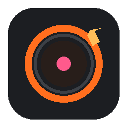

Auto Radar
Detecta oportunidades mientras navegas. El service worker analiza la página y la puntúa contra tus Goals activos, en silencio.

EfestoRadarEfesto Opportunity Radar analiza lo que lees en local, lo cruza con tus Goals y guarda lo útil en tu vault de Obsidian. Sin nube. Sin vigilancia. Sin ruido.
Chrome MV3 · Local-first · Gratis por defecto
Detecta oportunidades mientras navegas. El service worker analiza la página y la puntúa contra tus Goals activos, en silencio.
Solo lo relevante llega al Kernel. Si la página no encaja con tus objetivos, se descarta. Cero spam a tu memoria.
Reconoce reposts y contenido casi idéntico (similitud Jaccard). Una oportunidad, una nota, no diez.
Cada captura se escribe como nota en Obsidian (Cases / Evidence / Opportunities). Buscable, portable, tuyo.
localhost:4000.Empaquetado listo para Load unpacked en Chrome.
⬇ efesto-extension.zip¿Primera vez? Sigue la guía de instalación en el repo.
Te avisamos cuando llegue la versión de la Chrome Web Store (un clic, sin fricción).